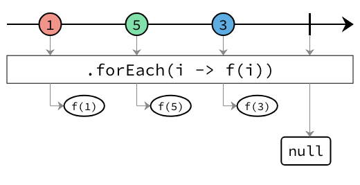
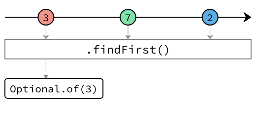
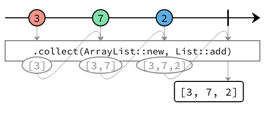

Interface ConsumingOperators<T>
- Type Parameters:
T- The type of the elements that the stream emits.
- All Known Subinterfaces:
ProcessorBuilder<T,,R> PublisherBuilder<T>
The documentation for each operator uses marble diagrams to visualize how the operator functions. Each element flowing in and out of the stream is represented as a coloured marble that has a value, with the operator applying some transformation or having some side effect, termination and error signals potentially being passed, and for operators that subscribe to the stream, an output value being redeemed at the end.
Below is an example diagram labelling all the parts of the stream.

-
Method Summary
Modifier and TypeMethodDescriptioncancel()Cancels the stream as soon as it is run.<R> ProducesResult<R>collect(Supplier<R> supplier, BiConsumer<R, ? super T> accumulator) Collect the elements emitted by this stream using aCollectorbuilt from the givensupplierandaccumulator.<R,A> ProducesResult<R> Collect the elements emitted by this stream using the givenCollector.Find the first element emitted by thePublisher, and return it in aCompletionStage.Performs an action for each element on this stream.ignore()Ignores each element of this stream.reduce(BinaryOperator<T> accumulator) Perform a reduction on the elements of this stream, using the provided accumulation function.reduce(T identity, BinaryOperator<T> accumulator) Perform a reduction on the elements of this stream, using the provided identity value and the accumulation function.toList()Collect the elements emitted by this stream into aList.
-
Method Details
-
forEach
Performs an action for each element on this stream.
The returned
CompletionStagewill be redeemed when the stream completes, either successfully if the stream completes normally, or with an error if the stream completes with an error or if the action throws an exception.- Parameters:
action- The action.- Returns:
- A new completion runner.
-
ignore
ProducesResult<Void> ignore()Ignores each element of this stream.
The returned
CompletionStagewill be redeemed when the stream completes, either successfully if the stream completes normally, or with an error if the stream completes with an error or if the action throws an exception.- Returns:
- A new completion builder.
-
cancel
ProducesResult<Void> cancel()Cancels the stream as soon as it is run.The returned
CompletionStagewill be immediately redeemed as soon as the stream is run.- Returns:
- A completion builder for the cancelled stream.
-
reduce
Perform a reduction on the elements of this stream, using the provided identity value and the accumulation function.
The result of the reduction is returned in the
CompletionStage.- Parameters:
identity- The identity value.accumulator- The accumulator function.- Returns:
- A completion builder for the reduction.
-
reduce
Perform a reduction on the elements of this stream, using the provided accumulation function.
The result of the reduction is returned as an
Optional<T>in theCompletionStage. If there are no elements in this stream, empty will be returned.- Parameters:
accumulator- The accumulator function.- Returns:
- A completion builder for the reduction.
-
findFirst
ProducesResult<Optional<T>> findFirst()Find the first element emitted by thePublisher, and return it in aCompletionStage.
If the stream is completed before a single element is emitted, then
Optional.empty()will be emitted.- Returns:
- A new completion builder.
-
collect
Collect the elements emitted by this stream using the givenCollector.Since Reactive Streams are intrinsically sequential, only the accumulator of the collector will be used, the combiner will not be used.
- Type Parameters:
R- The result of the collector.A- The accumulator type.- Parameters:
collector- The collector to collect the elements.- Returns:
- A completion builder that emits the collected result.
-
collect
Collect the elements emitted by this stream using aCollectorbuilt from the givensupplierandaccumulator.
Since Reactive Streams are intrinsically sequential, the combiner will not be used. This is why this method does not accept a combiner method.
- Type Parameters:
R- The result of the collector.- Parameters:
supplier- a function that creates a new result container. It creates objects of type<A>.accumulator- an associative, non-interfering, stateless function for incorporating an additional element into a result- Returns:
- A completion builder that emits the collected result.
-
toList
ProducesResult<List<T>> toList()Collect the elements emitted by this stream into aList.
- Returns:
- A completion builder that emits the list.
-